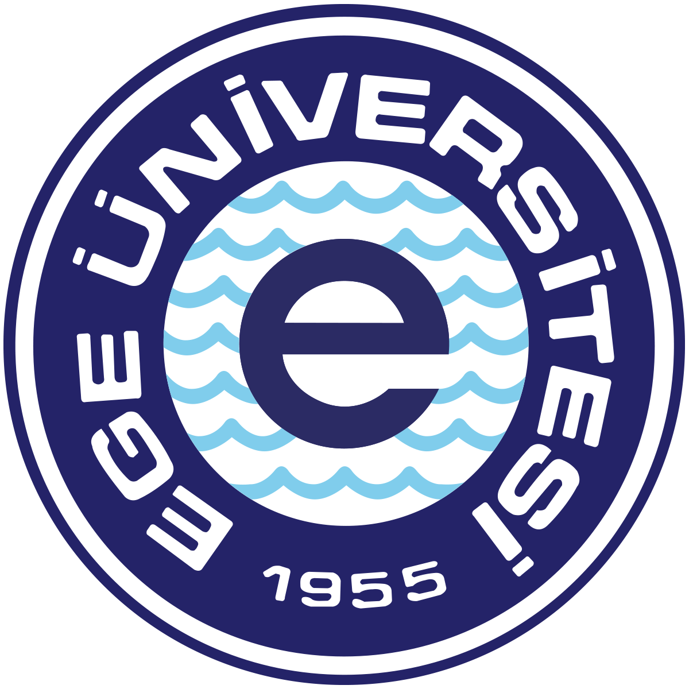

Bilgisayar Programcılığı bölümünün misyonu, öğrencilere bilişim sektöründe iyi bir eğitim sağlamaktır...
Bilgisayar Programcılığı bölümünün vizyonu, bilişim teknolojileri alanında öncü bir birim olmaktır...
Bilişim alanında uzmanlaşmış yazılımcılar ve teknik destek elemanı olarak çalışabilecek teknikerler yetiştirmek...
Eğitim-öğretim faaliyetlerine ilk olarak 1994–1995 öğretim yılında başlamıştır.
Programı başarıyla tamamlayan mezunlara ön lisans diploması verilir.
Ön Lisans
Adayların lise diplomasına sahip olması ve Üniversite Öğrenci Seçme Sınavı'ndan yeterli puanı almış olması gerekir.
İngilizce dersi için her akademik dönem başında muafiyet sınavı düzenlenmektedir. Başarılı olanlar İngilizce dersinden muaf olurlar.
Programda mevcut olan (toplam 120 AKTS karşılığı) derslerin tümünü başarıyla tamamlamak için 4.00 üzerinden en az 2.00 ağırlıklı not ortalaması elde etmek.
Bilgisayar bilimlerinin her alanında yeterli bilgiye sahip, bilgisini yüksek derecede uygulama becerisiyle donatılmış, kendisini teknolojik gelişmeler doğrultusunda sürekli olarak geliştirebilen bilgisayar teknikerleri yetiştirmektir.
KPSS’den gereken puanı almaları durumunda bilgisayar işletmeni olarak görev alabilmektedirler. Özel sektörde de bilgisayar operatörü olarak görev yapabilmektedirler.
DGS sınavında gereken puanı almaları durumunda lisans eğitimlerini tamamlayabilirler.
Her ders için uygulanan ölçme ve değerlendirme şekli “Ders Öğretim Planı”nda ayrıntılı bir şekilde tanımlanmıştır.
Yeterlilik koşulları ve kurallar bölümündeki koşullar yeterlidir.
Tam zamanlı
Oğuz DÖNMEZ
Tire Kutsan Meslek Yüksekokulu, Bilgisayar Programcılığı Program Koordinatörü
Tire Kutsan Meslek Yüksekokulu, 35900, Tire, İzmir.
Tel: (0 232) 5128616-7126
Öğrencilerin uygulama yapabilmesi amacıyla yirmişer bilgisayarlı iki tane bilgisayar laboratuvarı bulunmaktadır.
Gelişen teknolojiye ayak uydurabilen, ulusal ve uluslararası standartlara uygun mesleki ve teknik bilgiye sahip, analitik ve yaratıcı düşünen, çözüm üretebilen, mesleki ve etik sorumluluğa sahip nitelikli gıda teknikerleri yetiştirmektir.
Ulusal ve uluslararası platformda aranan özelliklere sahip nitelikli gıda teknikerleri yetiştiren, sanayi ile işbirliği içerisinde olan, eğitim kalitesi ile sürekli gelişim gösteren bir yükseköğretim kurumu olmaktır.
Eğitim-öğretim faaliyetlerine 1994-1995 öğretim yılında "Gıda Teknolojisi Programı" adı altında başlamıştır.
Programı başarıyla tamamlayan mezunlara GIDA TEKNİKERLİĞİ alanında ön lisans diploması verilir.
Ön Lisans
Adayların lise ve dengi okul diplomasına sahip olması ve Üniversite Öğrenci Seçme Sınavı'ndan yeterli puanı almış olması gerekir.
İngilizce ve Bilgisayar dersleri için her akademik yıl başında muafiyet sınavı düzenlenmektedir. Başarılı olanlar Yabancı Dil-I, Yabancı Dil-II, Bilgi ve İletişim Teknolojisi derslerinden muaf olurlar.
Programda mevcut olan (toplam 120 AKTS karşılığı) derslerin tümünü başarıyla tamamlamak için en az 2.00 ağırlıklı not ortalaması elde etmek.
Gıda Teknolojisi Programının amacı, gıda sektörünün ihtiyaçlarına cevap verecek nitelikte gıda bilimi ve teknolojisi konusunda bilgi ve beceri sahibi; gıda maddelerinin sağlıklı olarak üretilmesi, muhafazası, ambalajlanması, depolanması ve servis edilmesi aşamalarında; gıda kalite kontrol laboratuarlarında ve hizmetlerinde ara eleman olarak çalışabilecek gıda teknikerleri yetiştirmektir.
Bu program mezunları gıda teknikeri olarak özel sektörde ve KPSS’den gereken puanı almaları durumunda kamu kurumlarında görev alabilmektedirler.
Ön lisans eğitimini başarıyla tamamlayan mezunlar, Dikey Geçiş Sınavı’nda (DGS) gereken puanı almaları durumunda Beslenme ve Diyetetik, Biyokimya, Gıda Mühendisliği ve Kimya bölümlerinde lisans eğitimi alabilmektedirler.
Her ders için uygulanan ölçme ve değerlendirme şekli “Ders Öğretim Planı”nda ayrıntılı bir şekilde tanımlanmıştır.
Yeterlilik Koşulları ve Kuralları bölümündeki koşullar yeterlidir.
Tam zamanlı
Nur CEYHAN GÜVENSEN, Gıda Teknolojisi Program Koordinatörü
Ege Üniversitesi Tire Kutsan Meslek Yüksekokulu, 35900, Tire-İzmir
Tel: (0 232) 5128616-71..
Öğrencilerin uygulama yapabilmesini sağlamak amacıyla bir adet laboratuar mevcuttur.
Muhasebe ve Vergi Uygulamaları programının misyonu, kamu ve özel sektörün ihtiyaç duyduğu, muhasebe ve vergi mevzuatı konusunda donanımlı, teknolojiyi etkin şekilde kullanabilen, mesleki etik değerlere bağlı, analitik düşünme becerisine sahip, sürekli öğrenme bilinciyle hareket eden, ulusal ve uluslararası standartlara uyum sağlayabilen nitelikli meslek elemanları yetiştirmektir.
Muhasebe ve Vergi Uygulamaları programının vizyonu, mezunlarını küresel standartlarda muhasebe ve vergi bilgisiyle donatan, teknolojiyi etkin kullanan, etik değerlere bağlı ve sektörde lider konumda olacak profesyoneller yetiştirerek, alanında öncü bir eğitim programı olmaktır.
Eğitim-öğretim faaliyetlerine ilk olarak 2002-2003 öğretim yılında 'Muhasebe Programı' adı altında başlanmıştır. 2009-2010 öğretim yılında programın adı 'Muhasebe ve Vergi Uygulamaları Programı' olarak değiştirilmiştir.
Programı başarıyla tamamlayan mezunlara Muhasebe ve Vergi Uygulamaları alanında ön lisans diploması verilir.
Ön Lisans
Adayların lise ve dengi okul diplomasına sahip olması ve Üniversite Öğrenci Seçme Sınavı’ndan yeterli puanı almış olması gerekir.
Yabancı Dil dersi için her akademik yıl başında muafiyet sınavı düzenlenmektedir. Başarılı olanlar Yabancı Dil-I ve Yabancı Dil-II derslerinden muaf olurlar.
Programda mevcut olan (toplam 120 AKTS karşılığı) derslerin tümünü başarıyla tamamlamak için 4.00 üzerinden en az 2.00 ağırlıklı not ortalaması elde etmek.
Muhasebe ve Vergi Uygulamaları programının amacı, muhasebe ve vergi uygulamaları alanında hizmet verebilecek bilgi ve beceriye sahip, mevzuata hakim olabilen, kendini sürekli geliştiren ve etik değerleri özümsemiş nitelikli muhasebe meslek elemanı yetiştirmektir.
EA1. Kamu ve özel sektör işletmelerinde muhasebe, finans ve vergi yönetimi alanlarında çalışabilen, etik değerlerin yanı sıra mesleki ve teknik bilgiye sahip, analitik düşünebilen nitelikli Muhasebe Meslek Elemanı yetiştirmektir.
EA2. Meslek hayatlarında sürekli öğrenme ve kendini geliştirme bilincine sahip, değişen mevzuat ve teknolojiye hakim, bölgesel ve ulusal gereksinimleri karşılayan mezunlar yetiştirmektir.
EA3. Mezunlar mesleki gelişimlerine lisans eğitimi ile devam edebilir ve bunun sonucunda kamu ve özel sektörde mali müşavir, yeminli mali müşavir olarak çalışabilir ya da akademik kariyer yapabilecektir.
Bu program mezunları muhasebe meslek elemanı olarak özel sektörde ve KPSS’den gereken puanı almaları durumunda kamu kurumlarında görev alabilmektedirler.
Ön Lisans eğitimini başarı ile tamamlayan adaylar Dikey Geçiş Sınavı’ndan yeterli puan almaları durumunda İktisat, İşletme, Maliye, Muhasebe, Uluslararası Ticaret, Çalışma Ekonomisi ve Endüstri İlişkileri vb. bölümlerde lisans eğitimi alabilmektedirler.
Her ders için uygulanan ölçme ve değerlendirme şekli “Ders Öğretim Planı”nda ayrıntılı bir şekilde tanımlanmıştır.
Yeterlilik Koşulları ve Kuralları bölümündeki koşullar yeterlidir.
Tam zamanlı
Öğr. Gör. Yılmaz ÖVÜROĞLU, Muhasebe ve Vergi Uygulamaları Program Koordinatörü, Ege Üniversitesi Tire Kutsan Meslek Yüksekokulu, 35900, Tire-İzmir.
Tel: (0 232) 5128616–7120.
Öğrencilerin uygulama yapabilmesi amacıyla iki tane bilgisayar laboratuvarı bulunmaktadır.